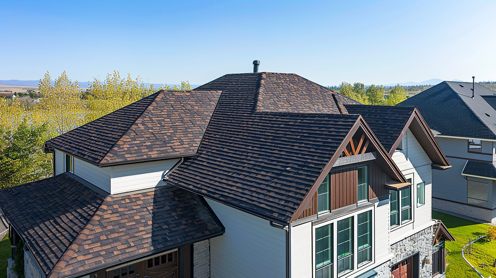

Roofs-N-More
Kemah, TX · Fully Insured
Residential roof replacement throughout greater Houston. We've installed 850+ roofs and we know what Gulf Coast weather does to them — hurricane-force winds, hail storms, relentless heat cycles and all.

League City, TX · Sep 2024The workhorse of Houston roofs. 30-year life, strong wind rating, dozens of colors. Factory-certified with enhanced warranty up to lifetime.
Qualifies for 15–30% insurance discounts in most Houston zip codes. Hail and debris rated for Gulf Coast weather.
Shake, slate, and laminate profiles that give your home a high-end look without the high-end maintenance.
Get a real price range in 90 seconds at quote.roofsnmore.com — no appointment needed to start.
We climb the roof, measure, note any damage, and send a fixed-price written contract within 48 hours.
Dumpster arrives early. Crew strips old shingles, inspects decking, replaces any rotten wood. All hauled off that day.
New underlayment, ice & water shield at eaves, starter strips, shingles, ridge vents, flashings. Magnetic sweep for nails.
We walk every square foot before we pack up. You walk it with us. Photos sent to your email that night.
We register your GAF manufacturer warranty and deliver your workmanship warranty paperwork before we leave.
Most residential replacements run $10,000–$18,000 depending on size, pitch, material, and decking repairs. Every quote is free and written — these are just ballparks to set expectations.
Most residential replacements (2,000–3,500 sq ft) are completed in one full day. Larger or steeper roofs may take two days. We always give you an exact timeline in writing before we start.
Most Houston homes run $10,000–$18,000 depending on size, pitch, material choice, and any decking repairs needed. Get a free AI estimate at quote.roofsnmore.com in under a minute — no appointment needed.
If your roof has hail or wind damage from a named storm, usually yes. We'll do a free inspection, document the damage, and walk you through the claim with your adjuster. We're experienced with Texas insurance claims and can help you through the whole process.
As a GAF Certified contractor, we can offer factory-certified enhanced warranties up to lifetime coverage on qualifying shingles. We'll explain exactly what warranty applies to your project before you sign anything.
If your roof is over 20 years old, has widespread damage, or shows active leaks in the attic, replacement is usually the smarter call. Under 15 years with isolated damage? A repair is probably fine. We'll tell you honestly which one fits your situation.
Get a free AI instant estimate in 90 seconds — or call Phil directly. No pressure either way.